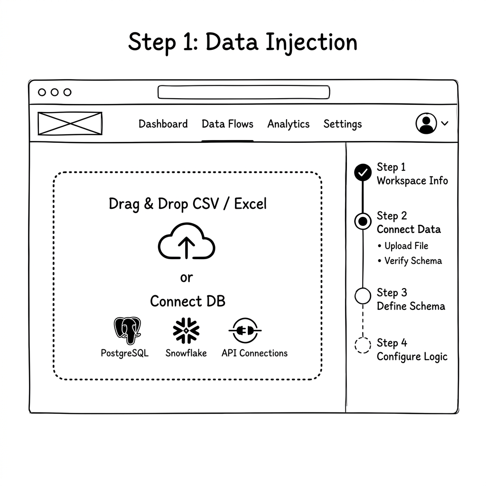
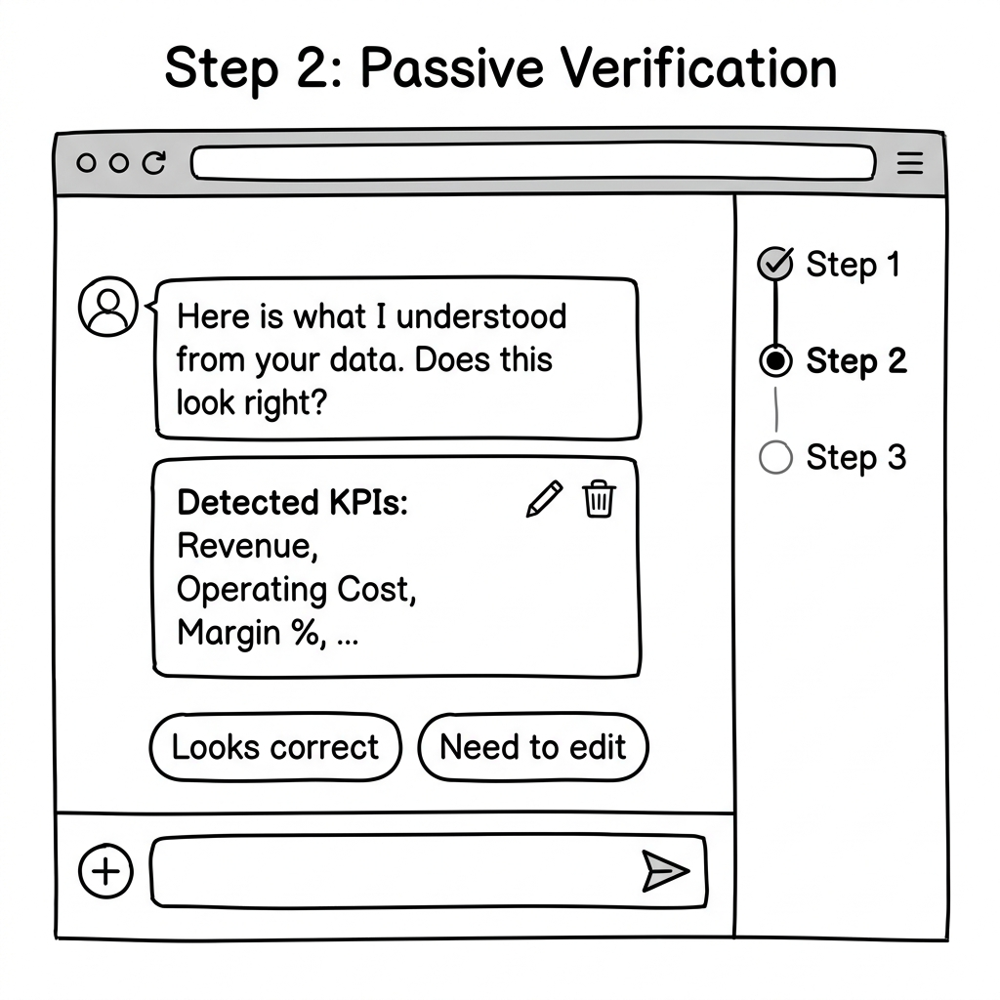
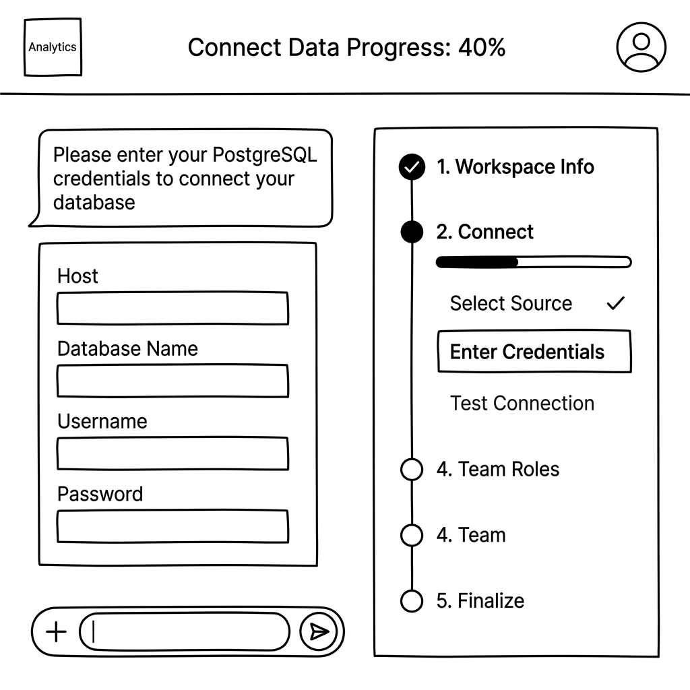
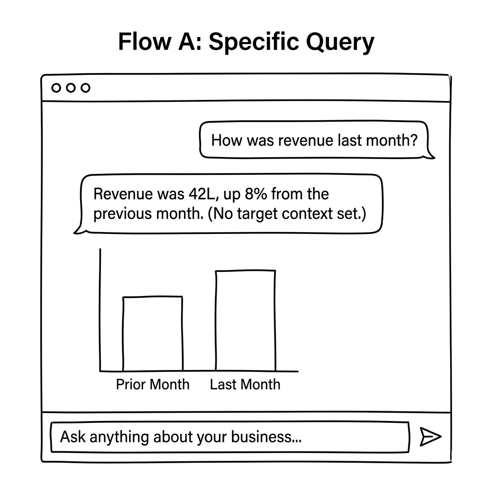
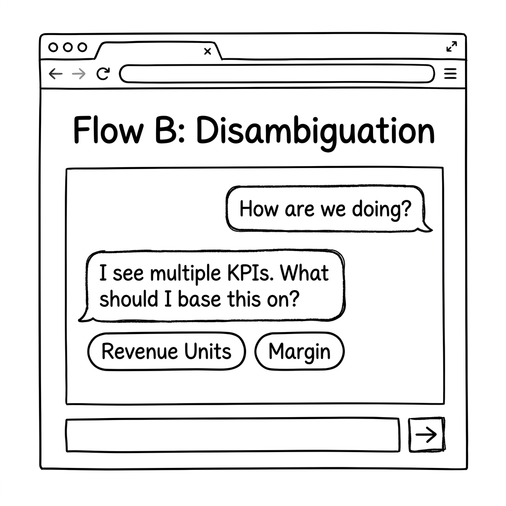
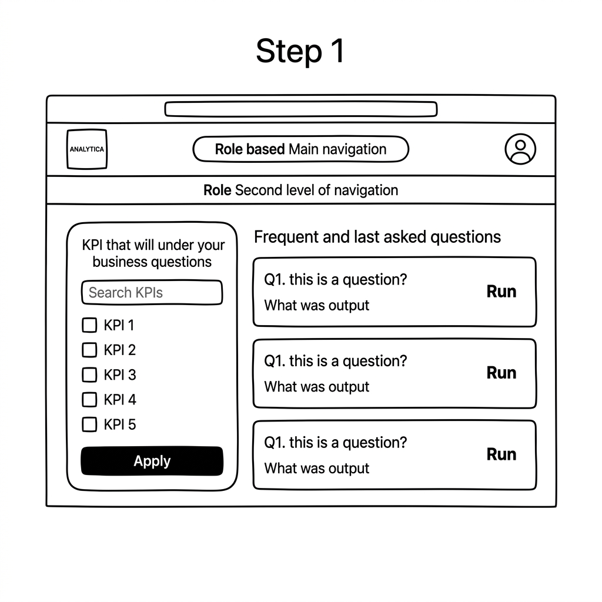

Zero-Selection Onboarding
Streamlining database schema discovery and credential connection.

Data Injection & Upload
Low-friction onboarding screen where users drop raw files or data dumps to initiate system database ingestion.
Use Case: Ingesting raw database dumps or CSVs without manual configuration.

Passive AI Verification
Automated passive analysis phase displaying schema scanning status, auto-detected columns, and model configurations.
Use Case: Verifying auto-discovered table relationships and column classifications before final connection.

Database Connection
Database connection form requesting credential config setups once system column inspection is verified.
Use Case: Securely connecting standard data sources (PostgreSQL, BigQuery) with minimal input fields.
Conversational Analytics
Intelligent querying mechanisms with automated disambiguation, metric customizers, and charts.

Flow A: Specific Query
Standard chatbot retrieve sequence displaying clean system responses and a focused chart comparing actual performance against target boundaries.
Use Case: Running daily performance queries (e.g. Revenue vs. Target) and immediately getting a visual target-comparison chart.

Flow B: Ambiguous Query
Intelligent conversational handler asking the user for parameter clarifications when multiple key metrics or conditions are met.
Use Case: Resolving vague questions like "Are we on track?" by choosing between dynamic options (e.g., Margin vs. Revenue Units).

KPI Selector & Customizer
Visual sidebar builder panel letting users select measures, dimensions, filters, and formats manually to generate custom visual blocks.
Use Case: Refining chart metrics, dimensions, and filter limits visually without writing code or typing chat prompts.